What is welded in#
This page lists the parts welded into WELD, what each one does in the app, and what is on the bench today.
The parts#
| Part | What it does in WELD |
|---|---|
| WayneUI | The interface: Wayne State's design system, wired into the Vue front end and Blade layouts |
| CREED | The written standards and policy.json: supported PHP, Laravel and Node versions |
| Pinstripe | The coding standard: Pint, PHPStan level 8, ESLint and Prettier |
| Preflight | The CI pipeline, from GitLab CI/CD components |
| PROCTOR | The checks, run in CI and as the deploy gate |
| SESAME | Sign-in: CAS, Entra ID (OpenID Connect) and the auth gateway driver, and app-native sessions |
| HELMET | The baseline runtime: security headers and CSP, sessions, trusted proxies, /up |
| Ziggy | Route names as URLs: the route list ships inside the Vite bundle, so route() works in Vue without an inline script |

One request, six stops, one seam. The bead runs the length of it; with reduced motion on, it stays put.
What is on the bench today#
HELMET, SESAME and PROCTOR are welded in from Packagist; the rest of the cast is on Packagist too and gets welded on in turn.
composer.jsoniswaynestate/weld, requires PHP^8.3, and the lock file resolves for 8.3.0.env.examplesetsAPP_NAME=WELD,LOG_CHANNEL=stderrandSESSION_DRIVER=databaseSchema::defaultStringLength(191)keeps index keys under Citadel's MySQL 5.6 767-byte cap.gitattributessets* text=auto eol=lfcomposer ciis the CI contract: it runs validate, tests, Pint, PHPStan level 8, the agent-ready check and audit, the same command on GitLab and GitHubpint.jsonandphpstan.neonstill copy Pinstripe's 0.1 Laravel presets; Pinstripe 0.1.1 is on Packagist (tagged), and they switch toincludes: vendor/waynestate/pinstripe/...when WELD requires it- HELMET runs its security headers and CSP middleware in the global chain, so every response carries the baseline; the Vite build takes the per-request nonce; trusted proxies are a literal list in
bootstrap/app.php;/upstays Laravel's built-in health route - SESAME owns sign-in at
/loginand/logout; the fake driver stands in for the identity provider locally, and CAS is an env change away - PROCTOR measures WELD against CREED's
policy.jsonas a CI job (composer proctor): warnings pass, failures block - The starter kit's password auth (register, login, password reset, two-factor) is removed on purpose; the door is SESAME's
- The license is MIT